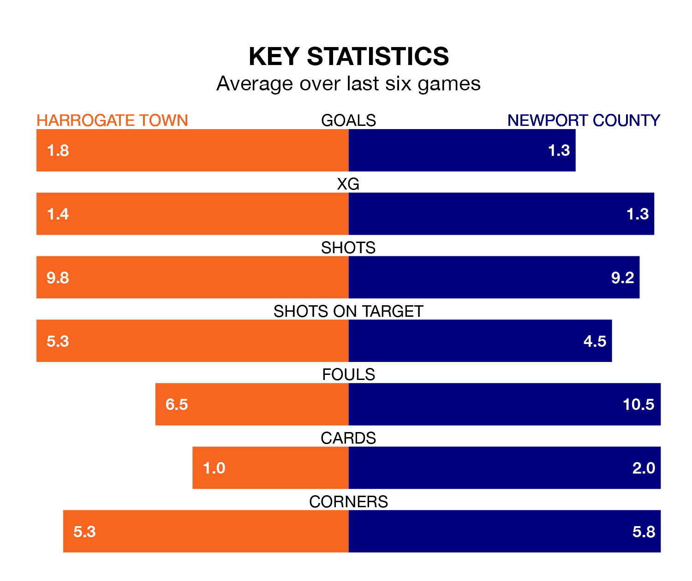

Newport County face Harrogate Town on Friday seeking to protect their long unbeaten run in EFL League Two.
The Exiles are unbeaten in five, with three wins and two draws, ahead of the 7.45pm kick-off.
They face a Harrogate team who have won three and drawn one over the same number of games.
In the last 10 years, Harrogate and Newport have played each other on seven occasions. They won three each, and they drew once.
On average, Harrogate scored 1.4 goals and the Exiles 2.3 in those matches.
Their last meeting was on October 7, when Harrogate won 2-1 away.
In Will Evans, Newport have one of the league's sharpest shooters so far this season. He has notched 15 goals in 28 appearances, to sit third in the scoring charts.
His goal rate of one every 154 minutes is quicker than that of George Thomson, Harrogate's top scorer with a goal every 242 minutes, and a total of eight goals in 24 games.
With 34 goals in 27 games so far this season, Town are scoring at below the league average rate with 1.3 goals per game. But they are conceding fewer than average too, letting in 35 goals at a rate of 1.3 per game.
County are also below average scorers, with 1.4 goals per game, compared to a league average of 1.5. They have conceded 1.6 goals per game.
The home team are ninth in the table after 27 games, of which they have won 12 and drawn four, earning 40 points.
The Exiles are five places behind Harrogate in 14th, with 10 wins and seven draws putting them on 37 points.
Harrogate's last match was on January 13, a 2-0 win against Forest Green Rovers, with Abraham Odoh and Jack Muldoon getting the goals for Harrogate.
Newport beat Wrexham 1-0 last time out, on Saturday, with Sebastian Palmer-Houlden on the scoresheet.
Updated: 09:18 (UTC), 23/01/24